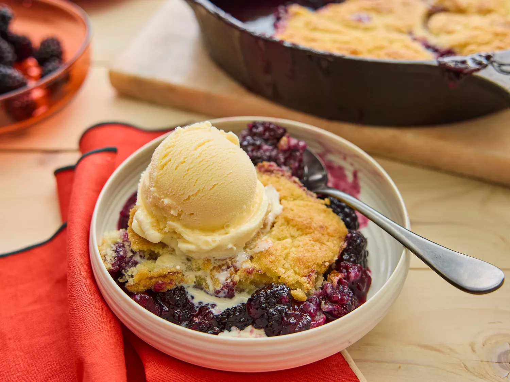

Blackberry Cobbler
Home

Description
A dessert of blackberry pie-type filling with a baked biscuit-y top layer that is sure to be a hit with your family.
Ingredients
- 1 cup all-purpose flour
- 1-1/2 cups white sugar, divided
- 1 teaspoon baking powder
- 1/2 teaspoon salt
- 6 tablespoons cold butter, cut into pieces
- 1/4 cup boiling water
- 2 tablespoons cornstarch
- 1/4 cup cold water
- 4 cups fresh blackberries, rinsed and drained
- 1 tablespoon lemon juice
Steps
- Gather the ingredients. Preheat the oven to 400 degrees F (200 degrees C). Line a baking sheet with aluminum foil.
- Mix flour, 1/2 cup sugar, baking powder, and salt together in a large bowl. Cut in butter until the mixture resembles coarse crumbs. Stir in boiling water just until the mixture is evenly moist.
- Dissolve cornstarch in cold water in a separate bowl. Mix in remaining 1 cup sugar, blackberries, and lemon juice. Transfer to a cast iron skillet and bring to a boil, stirring frequently.
- Drop in spoonfuls of dough, then place the skillet onto the prepared baking sheet.
- Bake in the preheated oven until dough is golden brown, about 25 minutes.
- Remove from oven to cool to serving temp, then serve.